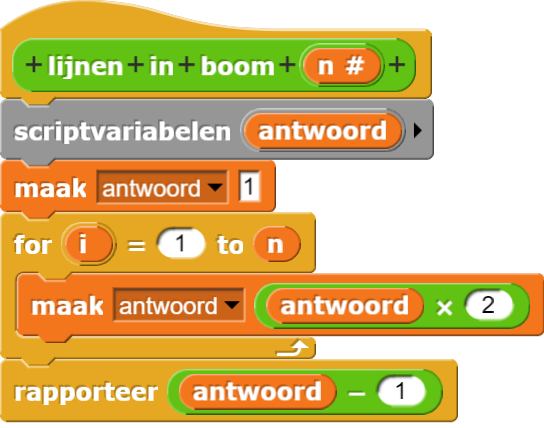

Bomen Tellen

In Hoofdstuk 7, heb je recursieve bomen gebouwd. Iedere boom bestond uit lijnen.
- Open je "H7L1-Boom"-project. Hoeveel lijnen zitten er in een boom op ieder niveau? Maak de tabel hieronder af. (Je kan het zelf tellen of Snap ! laten tellen).
- Hoeveel lijnen zitten er op een niveau meer dan op het vorige niveau?
- Bouw een blok waarvan de invoer het aantal niveau's van een boom en de uitvoer het aantal lijnen op dat niveau is.
| niveau | aantal lijnen |
|---|---|
| 1 | 1 |
| 2 | 3 |
| 3 | |
| 4 | |
| 5 | |
| 6 |
Alex en Bo bespreken de code die ze zojuist gemaakt hebben.
Alex: Ik zag een patroon in de tabel. Ieder aantal lijnen is een macht van 2 min 1.
Bo: Hoe ziet jouw code eruit?
Alex: Ik heb een
for lus om een macht van 2 te maken en dan trek ik er 1
vanaf:

Alex: Aan het einde verstuurt het
rapporteerblok de uiteindelijke waarde.
Daar doe ik de laatste wiskundige actie.
Bo: Wow. Die van mij werkt heel anders! Mijn code lijkt op die van die voor de
boom.
Alex: Interessant... Maar ik snap er niks van.
Bo: Kijk nog eens naar de code voor
boom. We hebben toen
recursie gebruikt. We bouwden een lijn, draaide, riepen boom aan om een kleinere
boom te maken, draaiden weer en riepen weer boom aan om een andere kleinere boom te maken.
Alex: Cool! We kunnen de manier waarop dat algoritme werkt gebruiken om de
lijnen
in boom rapporteur recursief te maken. Maar we kunnen al het bewegen en draaien negeren toch?
Ik ga het eens proberen.
Bo: Precies! En vergeet niet: Basisgevallen zijn belangrijk!
Je hebt al gewerkt met recursieve Commando-blokken. Recursie kan ook gebruikt worden voor rapporteurs.
- Als je het nog niet gedaan hebt, bouw dan een recursieve rapporteur die het
aantal lijnen in een boom van niveau n rapporteert.
Onthoud dat je op "Toepassen" moet klikken voordat je een blok recursief kan gebruiken in Snap!.